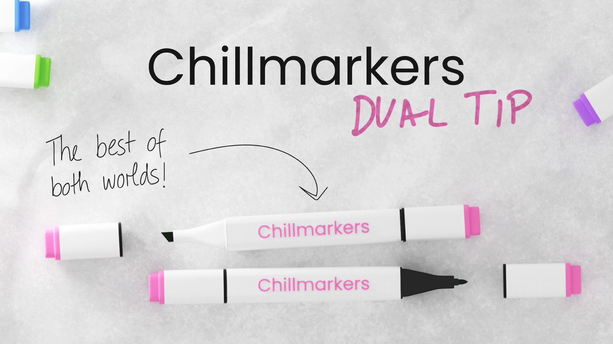
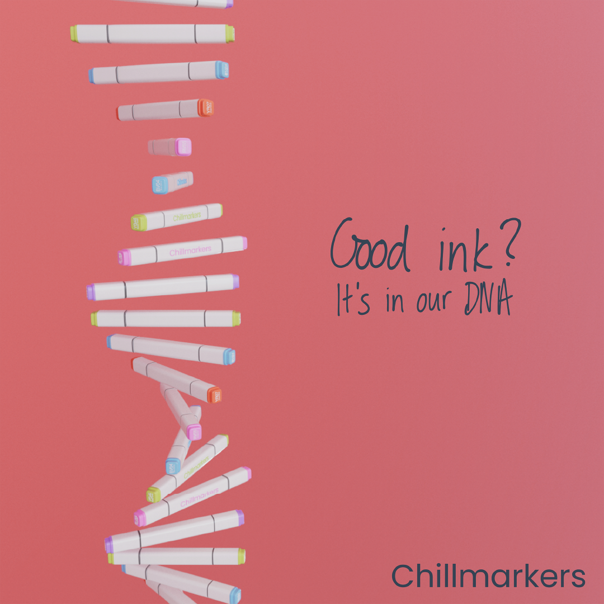
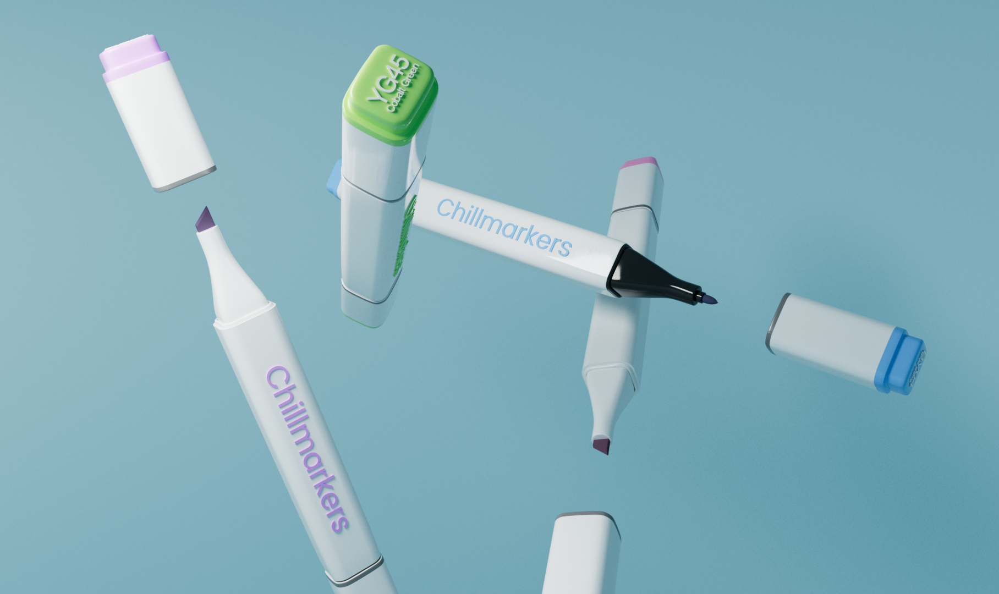

For this project, our task was to create a product in Cinema 4D of our choosing, then advertise it. I decided to create alcohol markers. Unsure what brand to choose, I created my own called “Chillmarkers”. I started with a PNG background of a marker and extruded a rounded cube and went from there. Each marker is a unique color with editable text for unlimited possibilities.
I wanted a floaty, dreamy feel for my first rendering. Illuminating this took a lot of experimentation and preciseness, as I was new to lighting at the time. My only critique on this was to round out the text for the next part of the project, which I later implemented.

Then, I had a sudden revelation! I was brainstorming interesting ways I could arrange the markers, and with a lot of time, patience and grouping, I ended up building a DNA spiral. It’s not perfect, and I wasn’t satisfied with my first attempt, but it was an intriguing concept.
While the project only called for one render, I thought the DNA concept might be too experimental, so I ended up doing two and seeing how the professor felt. However, the typography was crowded and lighting heavily lacked, especially in the dual tip advertisement.
Here is the final version of my images, with crisper lighting/color correction, cleaner type treatment, and more emphasis focal points.